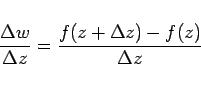

Inhalt Index DeskTop Bronstein

 Funktionentheorie Funktionen einer komplexen Veränderlichen Stetigkeit, Differenzierbarkeit
Funktionentheorie Funktionen einer komplexen Veränderlichen Stetigkeit, Differenzierbarkeit


Eine Funktion w = f(z) heißt an der Stelle z differenzierbar, wenn der Differenzenquotient
|  | (14.3) |
für einem vom Annäherungsweg unabhängigen Grenzwert zustrebt. Dieser Grenzwert wird mit f'(z) bezeichnet und Ableitung der Funktion f(z) genannt.
| Beispiel |
|
Die Funktion ist im Punkt z=z0 nicht differenzierbar, denn bei Annäherung an den Punkt z0 längs einer Parallelen zur x-Achse strebt der Differenzenquotient gegen den Wert Eins, dagegen bei Annäherung längs einer Parallelen zur y-Achse gegen den Wert Null. |